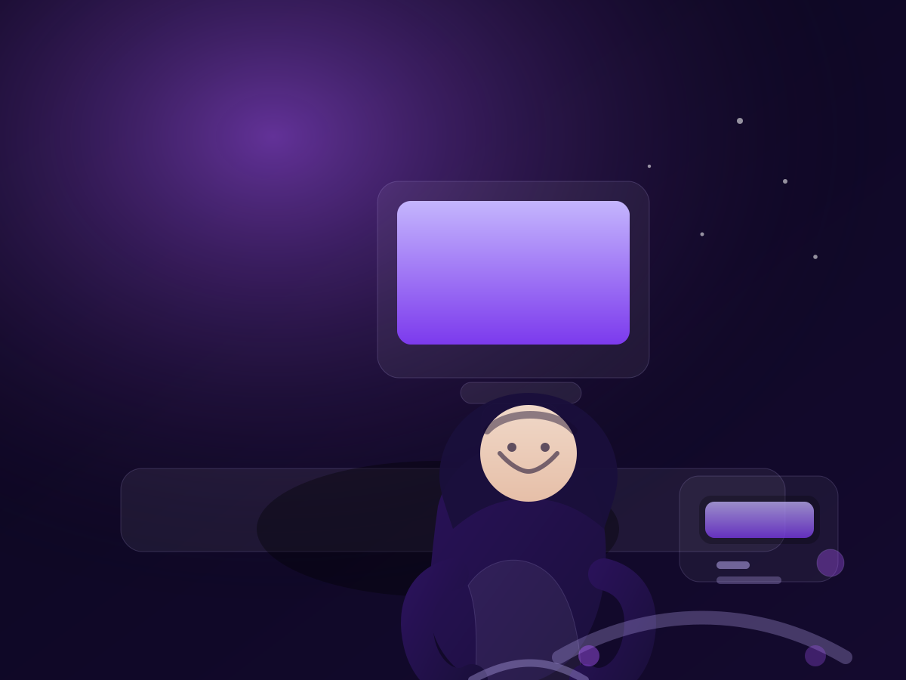

BTS SIO
Réseaux
Développement web
Maintenance
Nasrulla Waleed
Étudiant en BTS SIO, passionné par les systèmes, les réseaux et le développement web. Je cherche à progresser sur des projets concrets, propres et bien documentés.

Compétences
Un aperçu rapide de mes compétences techniques et humaines, issues de ma formation et de mes stages.
Tech
HTML, CSS, JavaScript (bases) PHP (débutant) Visual Studio Code XAMPP, phpMyAdmin Windows, Linux Maintenance informatique Réseaux : TCP/IP, DHCP, DNS, topologiesSoft skills
Esprit d’équipe Autonome Polyvalent Gestion de projet AdaptabilitéLangues
- Urdu : Langue natale
- Anglais : En cours d’apprentissage